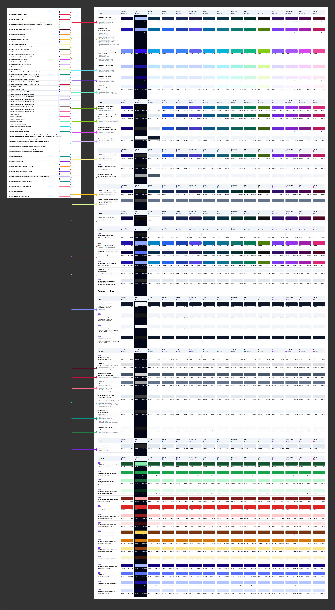
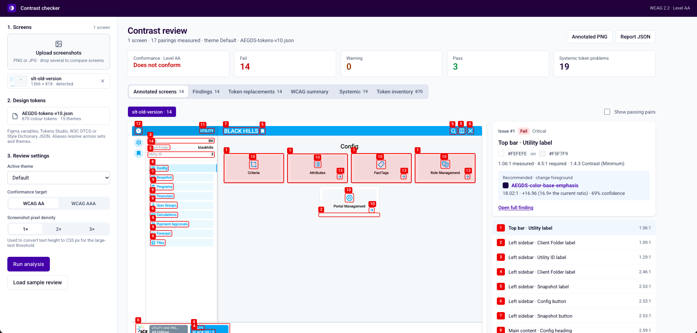
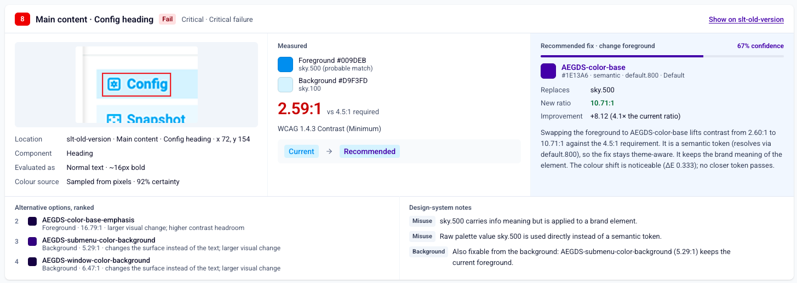

An AI-assisted QA concept that connects contrast issues found in UI screenshots to accessible alternatives within an existing design-token system.
Focus:
Design Systems
Accessibility
AI-assisted QA
My role:
Product Design
UX and workflow definition
During a design-token migration, small color changes created uncertainty during QA. It wasn't always clear whether a difference was an intentional update or an accessibility issue that still needed attention.
Finding a replacement wasn't straightforward either. A color could meet contrast requirements but still break the visual consistency of the existing design system.
QA needed a faster way to identify the issue, understand which token was involved, and find a suitable alternative without manually comparing color values across the system.
View more details about the refactory process ↗︎
I explored an AI-assisted workflow that connects screenshot-based contrast analysis with the existing design-token system.
Instead of returning a list of potential failures, the tool helps connect three pieces of information: the affected UI element, the contrast requirement it fails, and a more suitable token candidate.
The goal is to make accessibility findings easier to act on while preserving consistency across the product.

Start with a UI screenshot and identify elements whose foreground and background colors may not meet the relevant contrast requirements.
Surface the affected element, its color values, and the applicable contrast threshold so the problem is clear and actionable.
Compare the problematic color against the existing token system, using semantic meaning and relationships between colors to identify suitable alternatives.
Present the proposed token alongside the original, making it easier to review the visual change and verify the contrast before adopting it.
A contrast checker can identify a problem, but it doesn't necessarily help a team choose a replacement that fits the product.
I focused the concept on connecting accessibility findings to the design system already in use.
That distinction matters: the goal isn't to introduce arbitrary new colors whenever a contrast check fails. It's to help designers find an accessible option that preserves the intended hierarchy and semantic role of the original token.
The AI assists with analysis and recommendations. The designer remains responsible for reviewing the change, checking its context, and deciding whether it belongs in the system.

Contrast requirements depend on the type of content and the colors being compared. A proposed alternative needs to be checked against the applicable WCAG criteria and reviewed in the context of the actual interface.
The concept is intended to support QA and design-system maintenance, not replace accessibility testing or human judgment.
The next step would be to validate the workflow against a representative set of known contrast issues, checking the accuracy of issue detection, the relevance of suggested tokens, and the time required to reach a verified solution.
The tool helped QA team members who were less familiar with the new token structure quickly identify contrast issues and find the right fixes, reducing the time spent reviewing UI changes.
By connecting accessibility findings to the existing design system, it made the migration easier to navigate and the review process more efficient, without requiring everyone to become an expert in the new token architecture first.
The value wasn't AI making the decisions. It was making the right decisions easier to reach.